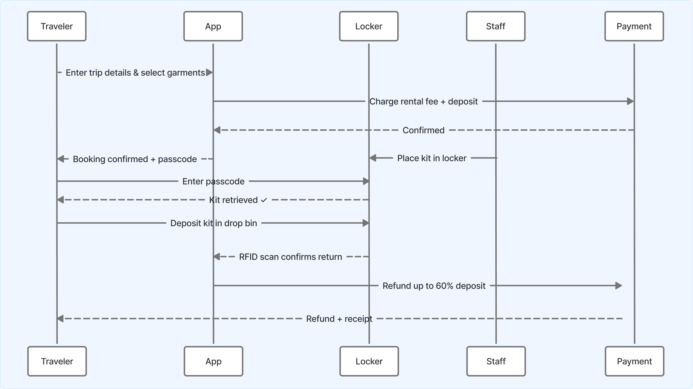
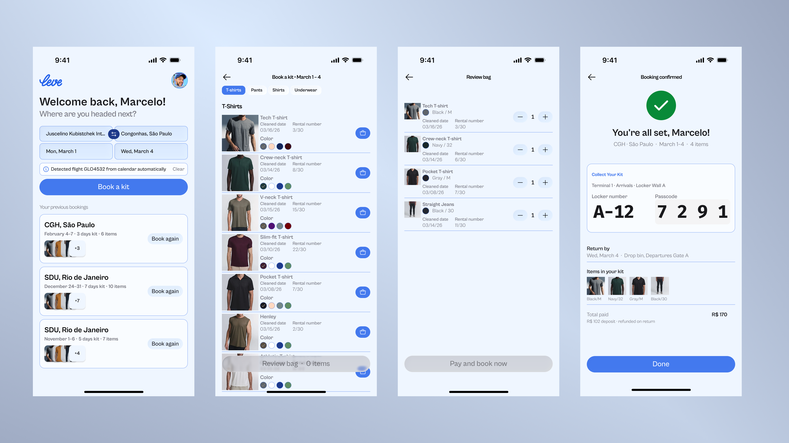
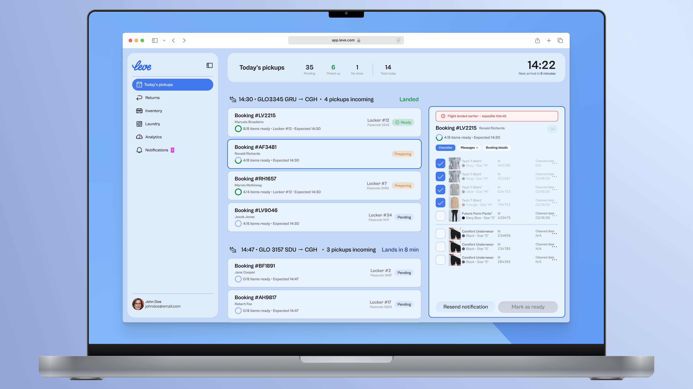

I'm Building a Service — Alone, Assisted by AI — to Let People Fly Leve
Leve is a clothing rental service for travelers who want to fly without a suitcase — pick exactly what you need, collect it from an airport locker on arrival, drop it in a bin before you leave. I designed it as a solo founder, using AI as a thinking partner throughout: to go deeper, move faster, and build something more considered than I could have alone.

The Problem
Packing is a tax on travel. The decisions the night before, the carry-on uncertainty at booking, the baggage fee surprises at check-in, the claim wait on arrival. Brazilian airlines now charge R$80–300 per checked bag — a round trip for a three-day work visit can cost more in fees than in the flight itself.
The problem isn't that travelers need better luggage. It's that they need to stop carrying clothes at all.
Existing solutions don't solve this. Hotel laundry is slow and expensive. Buying at the destination wastes time and money. Clothing rental exists in Brazil, but only for formal occasions — not for the functional wardrobe a business traveler actually needs.

Discovery
Leve came from a frustration I kept running into: the suitcase you have to keep in sight at all times, the carry-on that may or may not fit, the baggage fee that shows up at the worst moment. We've grown used to services that removed friction entirely — Uber made hailing a car invisible, Airbnb made finding a place to stay effortless — but the airport experience itself remained stubbornly stressful. Each inconvenience is minor on its own. Together they make travel feel like logistics.
That gap — between the frictionless services we already rely on and the stubborn stress of airport travel — is where Leve lives. I mapped the traveler journey end to end, from packing the night before to hotel check-in, identifying every point where clothing was the cause. I then looked at where rental behavior already existed in Brazil to understand what customers were culturally prepared for, and dug into the operational dependencies that would make or break the service: airport real estate, laundry logistics, inventory tracking.
The central hypothesis is behavioral: frequent travelers will happily outsource their wardrobe if the experience is frictionless enough. Fashion is irrelevant. Convenience has to be total.

Design Approach
The product is built around one principle: the fewer decisions a traveler has to make, the more valuable the service becomes.
Controlled freedom, not open choice. Travelers pick exactly the items they need — but from a catalog tight enough that the decision is never hard. Five item types, 2–3 neutral colors each, one brand. The constraint is the design: enough variety to feel personal, few enough options to avoid analysis paralysis.
Three pickup modes, one information model. Smart locker (passcode on app, 24/7), staffed counter (peak hours), or hotel delivery (premium). Meaningfully different physical experiences, but a single booking flow and return logic. The model doesn't branch — it resolves differently at the edge.
Deposit as trust infrastructure. Instead of threatening customers with penalties, the deposit model incentivizes returns: 60% of the rental fee refunded on drop-off. Customers who keep items are automatically converted to a purchase, which becomes a revenue stream rather than a loss.
Operational transparency as product feature. Every garment shows rental count and last-cleaned date in the app — a direct answer to the most instinctive objection to rental clothing, without requiring the customer to ask.
How I Built It. Claude and Notion — connected via MCP — for writing the business plan, diagrams, and product requirements. Pencil, Figma and Claude Code for UI concept design and rapid prototyping through MCP for prompt-to-design. The same principle that shaped the product — fewer decisions, tighter constraints, faster execution — shaped how it was built.

Front Stage and Back Stage
The customer app is what makes all of that possible. A returning traveler opens Leve, sees their upcoming flight detected from calendar sync, and reorders their previous selection in one tap. A first-time user browses by category — each item showing its cleaned date and rental count directly in the catalog — builds their order, pays, and receives a locker number and passcode before they land. Confirmation shows the locker location, return deadline, and deposit amount. The entire booking takes under two minutes. The operational complexity in the dashboard is precisely what lets the app stay that simple.

The operations dashboard is where Leve's complexity lives. A customer's two-minute booking triggers a chain of back-end coordination that the app never exposes: locker assignment, inventory reservation, and — once a flight lands — an automated passcode sent to the customer's phone. Staff see all of this in real time: incoming flights grouped with their attached bookings, each showing preparation status, assigned locker number, and expected arrival time. When a flight lands early, the system flags it. Opening a booking reveals a per-item checklist — every garment tracked by RFID, with its cleaned date and rental count — that staff work through before marking an order ready. Returns follow the same logic in reverse: drop bin to RFID scan to laundry prep, with deposit refunds processed automatically within 24 hours. Twice a day, a laundry courier collects returns and restocks clean items; the dashboard tracks what's in circulation, what's being cleaned, what's available, and which garments are approaching their 30-cycle retirement threshold. The staff's job is exception handling. The system handles everything else.

Work in Progress
Leve is still at a conceptual stage. There's no launch data, no retention curve whatsoever. What exists is a fully reasoned service — customer journey, pricing model, operational infrastructure, deposit logic, two designed interfaces — built by one person across a few weeks. That pace was only possible because of how I used AI throughout: to stress-test operational assumptions, model pricing scenarios, draft and challenge the product narrative, and push past the parts of the work that would otherwise stall. The output is a comprehensive business plan covering everything from financial projections to operational logistics to product design, diagrams for major processes, two interface concept mockups illustrating both sides of the experience, and a branding concept. AI shortened the distance between an idea and a considered position on it.